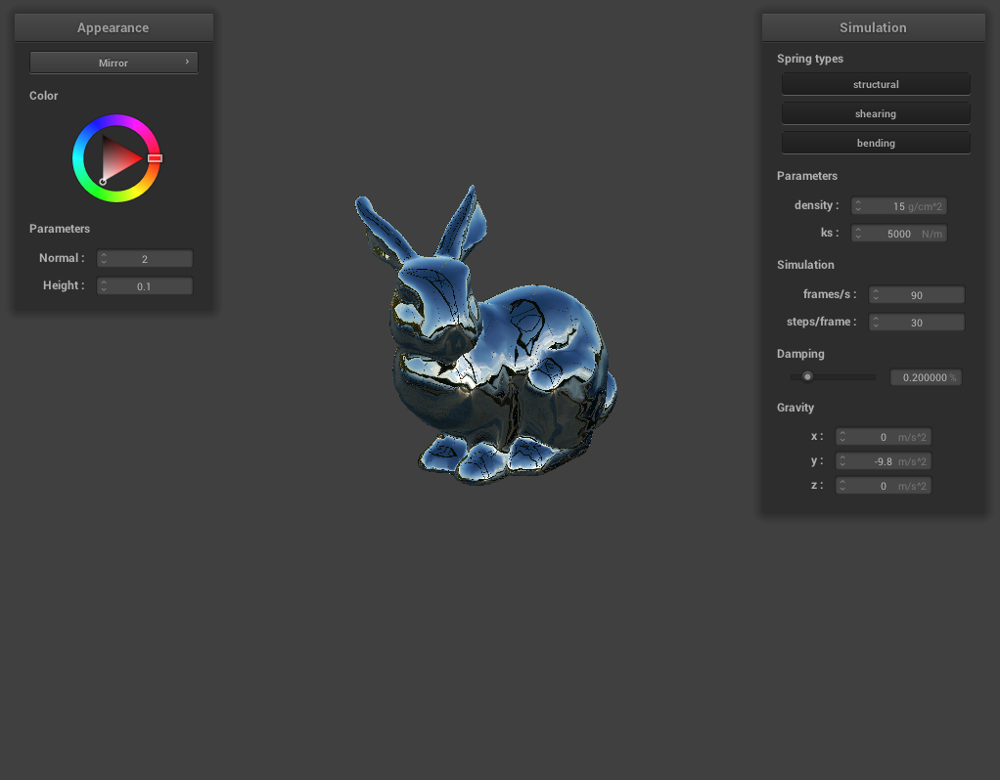
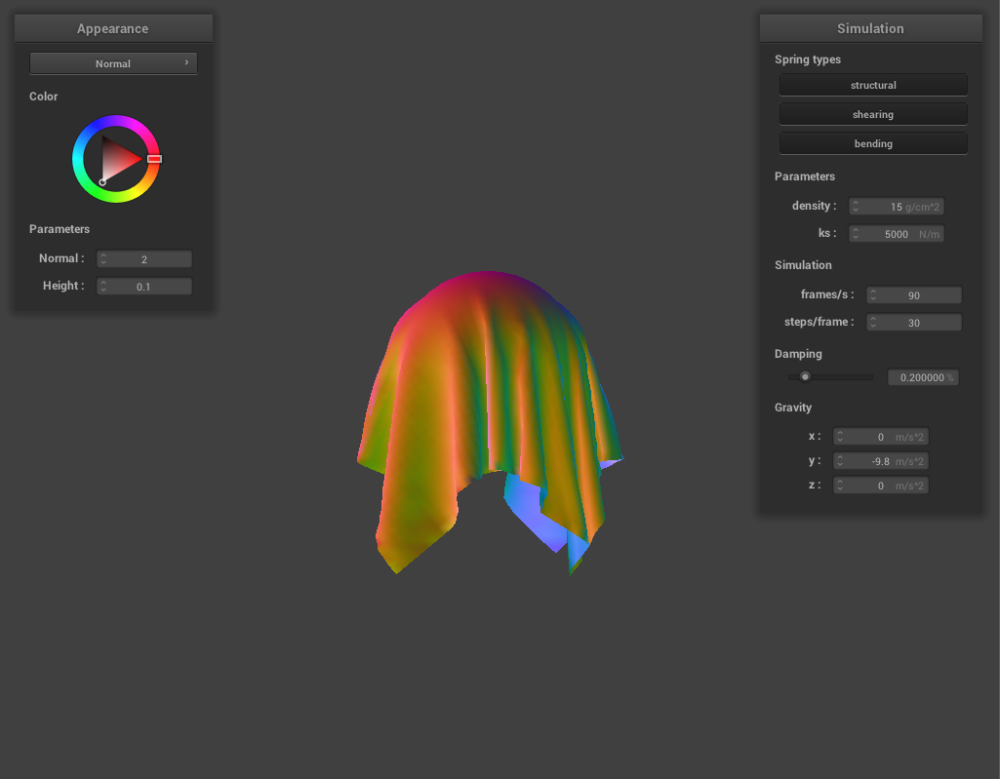

After looking through the paper we planned to use in the proposal (Folding and Crumpling of Adaptive Sheets), we realized that the complexity of the paper was too high for us to reasonably complete the project within the 4-week timeframe. So, we spent some time finding an alternate, simpler implementation of paper simulation that specifically focused on origami: Discrete Shells Origami. This paper required us to first implement a new cloth simulation/mesh framework outlined in another paper: Large Steps in Cloth Simulation. We decided to use our finished CS 184 Project 4 code as a base for our project, but with the following changes:
.obj files rather than simply having rectangular cloth. This also naturally resulted in the arrangement of springs being different from the Project 4 code. Instead of each spring being represented as a 3D line segment in our mesh, the springs are now not separate entities from the triangles, but rather, each triangle has its own constants for shearing, bending, and stretching forces.To be more specific, here are the changes we made to the Project 4 code:
buildFromOBJ() to cloth.cpp to load an arbitrary .obj file and place point masses according to the file's mesh structure.physics.cpp and physics.h that calculate stretch constraints and shearing constraints for each triangle in our mesh. The implementation is outlined in the Large Steps in Cloth Simulation paper.buildClothMesh() in cloth.cpp to build our cloth mesh according to the mesh constructed by buildFromOBJ(). In this function, we also constructed a world-to-object space matrix \(\mathbf{D}_{u,v}\) for each triangle, which we use in our stretch and shear constraint calculations..obj files. Below are two images that show the features we have implemented.
|

|

|
We are somewhat behind compared to our proposal timeline due to the fact that we spent a significant portion of the last two weeks deciding what new model we should use for our paper simulation. But, we have now created the basic mesh infrastructure required to develop our demos and ensure physics are generalizeable to arbitrary meshes. In the next two weeks, we plan to complete the bending constraint code, and finally implement the meat of the Discrete Shells Origami paper. Given that this new paper allows us to simulate simple origami paper folding, we will now attempt to make our primary demo one where we fold a basic origami pattern, rather than standard paper simulation.
Additionally, we have to clean-up some of the integration of our new model with the pre-existing Homework 4 starter code. For example, we need to properly be able to show the structure/"wireframe" of our mesh even with the new mesh structure that doesn't separate the springs from the triangle mesh object. On top of this, we need to optimize the speed of the simulation using some more of the optimizations in Large Steps in Cloth Simulation. In particular, there is a nice optimization in this paper that allows us to limit the number of coordinates that we need to consider when calculating a point mass's future velocity and position.